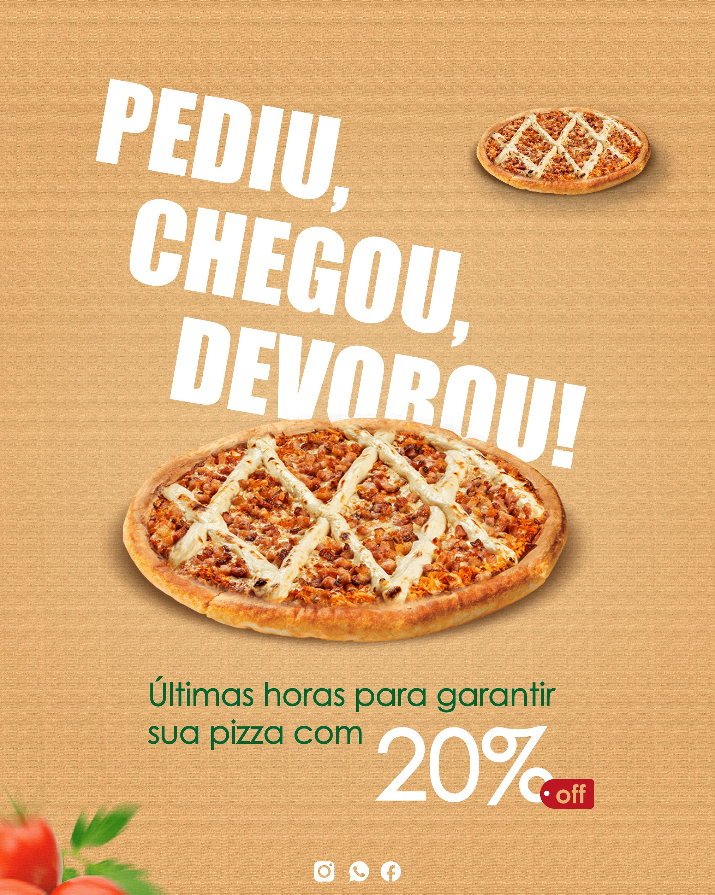

Flyer para Pizzaria – Design Profissional para Divulgação de Promoções
O flyer para pizzaria é uma das melhores formas de divulgar promoções, combos e novidades do cardápio. Uma arte profissional chama atenção rapidamente e pode aumentar o número de pedidos, principalmente nas redes sociais e no WhatsApp.

Como designer gráfico, desenvolvo flyers personalizados para pizzarias que desejam destacar seus produtos e atrair mais clientes. O design é pensado para valorizar imagens de pizza, destacar preços e organizar as informações de forma clara e estratégica.
Design Criativo para Promoções de Pizza
Promoções são fundamentais para aumentar as vendas. Flyers bem elaborados ajudam a destacar ofertas como combos familiares, duas pizzas por preço especial, rodízio e promoções de fim de semana.
Se você também deseja melhorar a presença da sua marca nas redes sociais, pode conhecer meu serviço de designer gráfico para pizzaria, onde explico como criar um perfil mais profissional e atrativo.
Flyer Digital para Redes Sociais
Hoje, a maioria das pizzarias divulga suas promoções no Instagram, Facebook e WhatsApp. Por isso, o flyer digital é desenvolvido em formatos ideais para essas plataformas.
Uma arte bem estruturada facilita a leitura das informações e ajuda o cliente a entender rapidamente a promoção, aumentando as chances de conversão.
Divulgação de Combos e Ofertas
Os combos são muito populares e podem ser apresentados de forma estratégica no flyer. É possível destacar sabores, tamanhos, bebidas inclusas e vantagens da promoção.
Para campanhas mais completas, você também pode utilizar arte para redes sociais e manter um padrão visual profissional em todas as suas publicações.
Material para Impressão e Delivery
Além do uso digital, o flyer também pode ser utilizado na versão impressa para divulgação local. Esse tipo de material é ideal para delivery, distribuição em bairros e ações promocionais.
Se você deseja ampliar ainda mais sua divulgação, pode combinar o flyer com cartão de visita profissional, fortalecendo sua marca e facilitando o contato com o cliente.
Como funciona o processo de criação
1. Envio das informações
Você envia detalhes como sabores, preços, combos, promoções e qualquer informação importante que precisa aparecer no flyer.
2. Planejamento visual
Organizo os elementos de forma estratégica para garantir clareza, hierarquia visual e impacto no design.
3. Criação da arte
Desenvolvo um flyer personalizado com imagens atrativas de pizza, cores chamativas e tipografia adequada para destacar a promoção.
4. Ajustes e entrega final
Após aprovação, realizo ajustes necessários e entrego o material pronto para uso em redes sociais ou impressão.
Perguntas Frequentes (FAQ)
Você cria flyers personalizados para pizzarias?
Sim. Cada flyer é desenvolvido de acordo com o estilo da pizzaria, suas promoções e identidade visual.
O flyer pode ser usado no Instagram?
Sim. O design é adaptado para Instagram, Facebook e WhatsApp, garantindo melhor visualização.
Posso divulgar vários sabores na mesma arte?
Sim. É possível destacar diferentes sabores, combos e promoções mantendo o layout organizado.
O que preciso enviar para iniciar o projeto?
Envie as principais informações do seu negócio, como: sabores ou produtos, preços, combos ou promoções, logomarca (se tiver), nome do estabelecimento e formas de contato (WhatsApp/redes sociais). Se puder, inclua também cores de preferência, referências de artes e qualquer detalhe importante que queira destacar (como delivery, inauguração, etc.). Quanto mais informações você enviar, melhor e mais rápido será o resultado
Qual é o horário de atendimento?
Atendo de segunda a sábado com suporte até às 22h. Esse horário é ideal para donos de pizzaria que costumam organizar promoções no período da noite.
Um flyer profissional ajuda nas vendas?
Sim. Um design profissional chama mais atenção, aumenta o alcance das publicações e influencia diretamente na decisão de compra do cliente.
Solicite seu Flyer para Pizzaria
Se você quer divulgar sua pizzaria com um flyer profissional e atrativo, entre em contato agora mesmo - 75 99800-9769 - e solicite um orçamento personalizado.